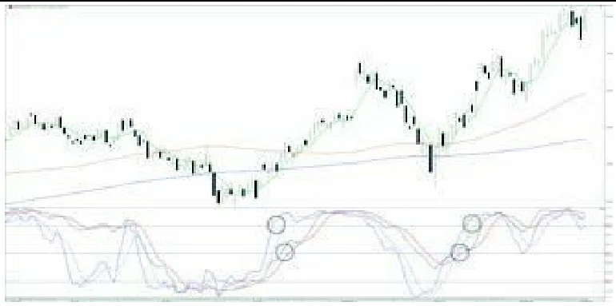
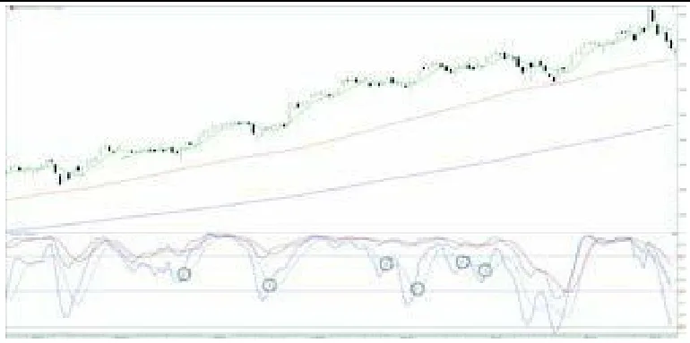
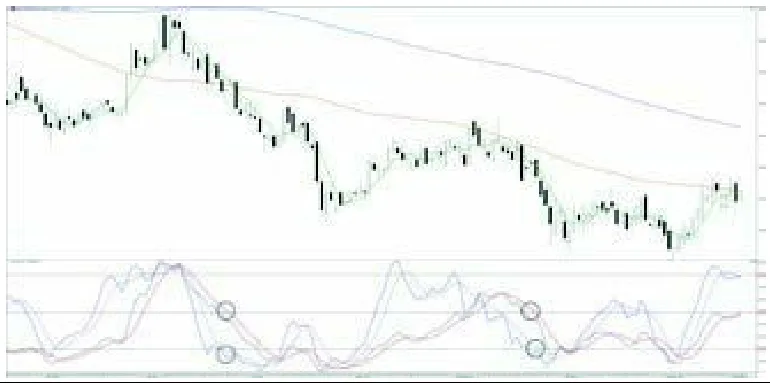
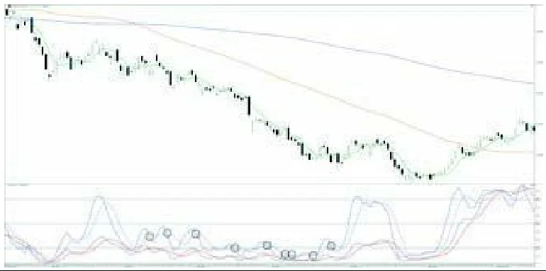
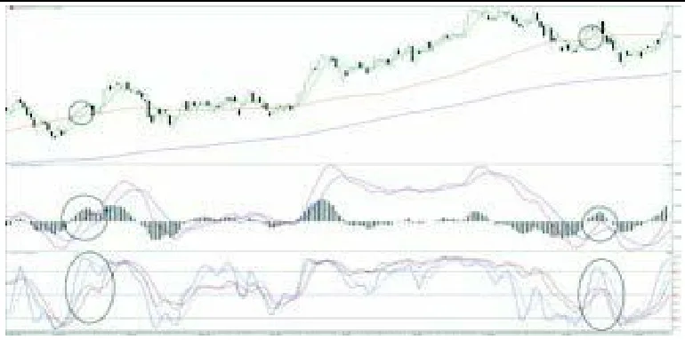

跳到教程正文
跳到教程正文你看到：K和D在80上方停留
这说明什么：平滑后的收盘位置持续靠近近期高端，可能是趋势强。
还不能说明什么：不能保证马上下跌，也不是价格涨了80%。
从零理解的中文读图课 · 入门
它看现在收盘价在最近最高价和最低价之间处于什么位置。靠近顶部分数高，靠近底部分数低；D线是K线读数的慢一点平均。
模拟资产，非真实历史或预测。每根为1小时已收盘K线；展示48根，指标另用前72根预热。图较宽时左右滑动，或展开数值表。
Stochastic 14/3/3: %K 44 / %D 33 · 末根已收盘读数
副图黑线%K是原始位置的3期平滑，蓝灰虚线%D是%K的3期平均；80/20虚线只是常用参考。读数表示收盘在近14根高低区间中的位置，不是涨跌幅。
最后一根：开 100.84，高 101.62，低 100.15，收 101.28；成交 53,674 股。先在图最右边找到它，再与表格核对。
| 时间 | O | H | L | C | 成交量 |
|---|---|---|---|---|---|
| 01-04 00:00 | 102.19 | 102.38 | 101.82 | 102.32 | 14376 |
| 01-04 01:00 | 102.32 | 102.46 | 102.21 | 102.42 | 10321 |
| 01-04 02:00 | 102.42 | 102.44 | 101.68 | 101.68 | 16634 |
| 01-04 03:00 | 101.68 | 101.82 | 101.30 | 101.82 | 7165 |
| 01-04 04:00 | 101.82 | 101.89 | 101.53 | 101.73 | 5764 |
| 01-04 05:00 | 101.73 | 101.94 | 101.63 | 101.73 | 6506 |
| 01-04 06:00 | 101.73 | 102.04 | 101.54 | 101.69 | 8801 |
| 01-04 07:00 | 101.69 | 101.94 | 101.40 | 101.79 | 11515 |
| 01-04 08:00 | 101.79 | 101.88 | 101.42 | 101.70 | 8681 |
| 01-04 09:00 | 101.70 | 101.92 | 101.42 | 101.92 | 12800 |
| 01-04 10:00 | 101.92 | 102.05 | 101.62 | 101.68 | 13727 |
| 01-04 11:00 | 101.68 | 102.11 | 101.64 | 102.11 | 32879 |
| 01-04 12:00 | 102.11 | 102.46 | 102.11 | 102.40 | 16864 |
| 01-04 13:00 | 102.40 | 102.92 | 102.37 | 102.92 | 28244 |
| 01-04 14:00 | 102.92 | 103.30 | 102.65 | 102.87 | 40685 |
| 01-04 15:00 | 102.87 | 103.10 | 102.20 | 102.36 | 60611 |
| 01-04 16:00 | 102.36 | 103.03 | 102.19 | 102.92 | 67942 |
| 01-04 17:00 | 102.92 | 103.19 | 102.70 | 103.00 | 34637 |
| 01-04 18:00 | 103.00 | 103.05 | 102.32 | 102.50 | 53976 |
| 01-04 19:00 | 102.50 | 102.79 | 102.06 | 102.17 | 36053 |
| 01-04 20:00 | 102.17 | 102.69 | 101.97 | 102.58 | 34200 |
| 01-04 21:00 | 102.58 | 102.73 | 102.18 | 102.60 | 23454 |
| 01-04 22:00 | 102.60 | 102.68 | 102.21 | 102.27 | 21251 |
| 01-04 23:00 | 102.27 | 102.67 | 102.19 | 102.51 | 13238 |
| 01-05 00:00 | 102.51 | 102.61 | 102.08 | 102.19 | 11110 |
| 01-05 01:00 | 102.19 | 102.23 | 101.50 | 101.54 | 15225 |
| 01-05 02:00 | 101.54 | 101.74 | 101.17 | 101.45 | 8036 |
| 01-05 03:00 | 101.45 | 101.97 | 101.37 | 101.80 | 8568 |
| 01-05 04:00 | 101.80 | 101.80 | 101.22 | 101.32 | 8310 |
| 01-05 05:00 | 101.32 | 101.78 | 101.27 | 101.63 | 10655 |
| 01-05 06:00 | 101.63 | 101.96 | 101.21 | 101.90 | 15133 |
| 01-05 07:00 | 101.90 | 102.22 | 101.86 | 102.14 | 5966 |
| 01-05 08:00 | 102.14 | 102.52 | 101.96 | 102.24 | 7860 |
| 01-05 09:00 | 102.24 | 102.45 | 101.76 | 102.34 | 15328 |
| 01-05 10:00 | 102.34 | 102.64 | 102.13 | 102.46 | 9226 |
| 01-05 11:00 | 102.46 | 102.98 | 102.42 | 102.46 | 10016 |
| 01-05 12:00 | 102.46 | 102.51 | 101.94 | 102.07 | 12897 |
| 01-05 13:00 | 102.07 | 102.44 | 102.01 | 102.10 | 6636 |
| 01-05 14:00 | 102.10 | 102.21 | 101.63 | 101.87 | 8213 |
| 01-05 15:00 | 101.87 | 101.98 | 101.49 | 101.60 | 10754 |
| 01-05 16:00 | 101.60 | 101.62 | 101.32 | 101.33 | 11573 |
| 01-05 17:00 | 101.33 | 101.42 | 100.84 | 101.16 | 14527 |
| 01-05 18:00 | 101.16 | 101.68 | 100.93 | 101.48 | 14715 |
| 01-05 19:00 | 101.48 | 101.77 | 101.30 | 101.64 | 10355 |
| 01-05 20:00 | 101.64 | 101.64 | 99.76 | 99.76 | 64555 |
| 01-05 21:00 | 99.76 | 101.31 | 99.51 | 101.04 | 69006 |
| 01-05 22:00 | 101.04 | 101.28 | 99.80 | 100.84 | 67255 |
| 01-05 23:00 | 100.84 | 101.62 | 100.15 | 101.28 | 53674 |
最后一根收盘不低于开盘，所以是绿空心；实体高度是 0.44 美元，整根高低范围是 1.47 美元。同一根读数：%K 44.48、%D 33.04；这是对已收盘数据的描述，不是对下一根的预测。
形状像真实交易图，数据仍是教学模拟；不据此推断真实市场胜率。后面的小数字算例独立演算，不是上图的逐点数据。
一栋楼从最低价修到最高价，指标告诉你收盘价在第几层。
计算示例：最近最低90、最高110、收盘106，未平滑的K值为80。
KD随机指标看收盘价位于最近最高与最低之间的什么位置：越靠近期顶部，读数越高；越靠底部，越低。K线较快，D是K的平均。它让你分清‘收盘总靠近上沿’与‘只是盘中摸高后掉下来’。
在已经认清价格区间或趋势的前提下，KD可以帮助观察收盘位置变化。高位连续停留可能是强势，不是必须做空；如果价格在固定范围内来回，位置从极端回到中间才更容易理解它的变化。
先找位置，再认单位；不同软件可能用不同颜色，认名称和含义比记颜色更可靠。
这说明什么：平滑后的收盘位置持续靠近近期高端，可能是趋势强。
还不能说明什么：不能保证马上下跌，也不是价格涨了80%。
这说明什么：收盘持续靠近近期低端，近期表现弱。
还不能说明什么：不表示跌无可跌。
这说明什么：近期区间位置在改善，快线先回升。
还不能说明什么：并未证明价格突破了原区间或下跌已结束。
KD和KDJ不是完全同一个显示；80以上不代表必跌，20以下不代表必涨。
下面是虚构的读图练习，不是当前行情。重点是学会从看到的现象推导出合理解释。
虚构回看区间最低90、最高110元。先不做平滑，只理解原始位置；再理解图上K/D如何缓慢跟随。
读数在说明收盘落在近期范围的哪里。位置回落代表相对范围走低，是否真正转成下降还需看主图高低点。
但不要跳到这个结论：没有证明80是卖点或20是买点，也不保证每次K/D交叉都有足够幅度覆盖交易成本。
价格创更高的高点，KD却没创新高，下一根一定跌吗？
不一定。它提示价格新高与区间位置动量不同步，值得检查收盘是否变弱；但窗口高低点和平滑也会改变分数，背离不是定时反转器。
能说清“看见什么 → 代表什么 → 还不能确定什么”，再去下面的软件操作部分照着练习。
George C. Lane
TradingView将随机指标开发归于1950年代的George Lane；未核实第一笔交易使用。不同地区KD/KDJ平滑细节可能不同。
提出者、推广者和第一个实际使用的人是三回事。这里按可追溯资料写明，不把后来的推广者一律说成最早创始人。
以下按电脑网页版编写，依据 2026-10-19 查阅的官方帮助。手机App的入口位置可能不同，部分功能还受账号权限和数据源限制。
本条目搜索词：Stochastic
官方内置STOCH；不是Stochastic RSI，亦没有KDJ的J线。 操作练习：添加Stochastic，保留14、3、3，分清K和D两条线。
本条目搜索词：KD / KDJ / Stochastic / 随机指标
官方文档列的是KDJ，不能保证与标准STOCH/KD完全一致。若只用K和D，仍需核对平滑公式与参数。
文字教程是本站整理；视频仍保留原来源，视频标题中的收益或胜率宣传不代表已验证。
出处：David Trullás《欢迎来到真实的股市》中文版 · 12. 随机指标（Estocástico）
西语原版：Bienvenidos al mundo real de la bolsa（Plataforma Editorial，2015，ISBN 9788416429103）
George Lane（乔治·莱恩）是伊利诺伊州 Watseka 的 Investment Educators, Inc. 公司总裁，他于 1984 年发表了一项针对 28 个震荡指标的研究，每一个都以一个字母命名。其中，以可靠性而论，D 研究与 K 研究最具代表性。正因如此，D 和 K 将在本章频繁出现。
随机指标基于某一时间框架（周线、日线、五分钟）的收盘价，相对于一个区间内的收盘价所处的位置。该区间最初取 14，不过已被许多分析师修改过，我们后面会看到。我们将使用它，并配合更长周期的随机指标。
与任何其他指标一样，对随机指标而言，时间框架越大，其产生的信号可靠性越高。
我们将使用两个随机指标：14 期和 50 期。
应用于每一个的具体参数，取决于你们希望向该标的索取的攻击性与可靠性水平。
为求更高的可靠性，我们将使用：
如果你们想要更早的入场信号（同时信号的可靠性会下降），则使用：
与 MACD 不同，随机指标在 0 到 100 点之间摆动。在此范围内，我们将识别出超买区与超卖区。
我们设定 50 这一水平，它相当于 MACD 的 0 轴。稍后我们会看到如何运用它。
随机指标处于超买区，意味着该标的走势强劲。这绝不等于「因为已经被超买，所以就会修正」；恰恰相反，只要它待在超买区，就仍会被持续买入，只有当它离开超买区时，情况才会另当别论。
反之，标的处于超卖区，我们便推断它走势疲弱，而且只要它继续超卖，就会持续走弱。
超买水平：75 至 85 之间。
超卖水平：25 至 15 之间。
如你们所见，我们可以自行定义「要求标的处于超买」的具体水平，由此向它索取程度更高或更低的强势。
如果我们把超买界定为从 75 开始，得到的超买标的就会更多；而若把超买界定在
85。会有标的越过 75 水平，却始终无法站上 85。
要求越高，强度越大、可靠性越高，但满足要求的标的数量也越少。
一般规则下，我们将以 80 作为超买水平，但具体选择由你们自己根据风险厌恶程度和操作舒适度来决定。
超卖水平完全同理：我们向超卖标的索取的临界水平越低，它的弱势就越深。此后，我们将以 20 作为研究的超卖区参考。
我们如何使用随机指标？
与 MACD 一样，随机指标由两条线组成：快线与慢线。如果你们还记得，本章开头我们说过，在 Lane 所做的所有研究中，D 和 K 最可靠。因此，随机指标的线条为：
K % ⇨ 快线。
D % ⇨ 慢线。
用哪一条更好？这完全取决于你们对市场的认知水平和预判能力。D % 是最可靠的信号，尽管它晚于随机指标给出的第一个信号——也就是 K %。一般来说，如果我们等 D % 给出信号再进场，价格会略贵一些（若做多），但操作会更安全。
首先，根据我们学过的标准，我们必须确认自己处于主要上升趋势中的一轮修正阶段。
我们的倾向是：在修正阶段结束后，于趋势重启的最初阶段识别出能让我们搭上趋势的信号。
入场标准有三条，且必须链式满足；只要其中一条不满足，就放弃入场。这三条标准是：
你们会问：到底该听哪条线，K % 还是 D %？由你们自己选，我们在每种情形下都讲过它们的含义。我建议，如果你们是初学者，就向指标索取最高的可靠性，也就是 D %。不必为买得稍贵而担心，先去熟悉这个指标的操作手感。
在本章的图表中，你们可以凭以下颜色识别每个随机指标的 K % 与 D %：
随机指标 50 的 K % ⇨ 黑色。
随机指标 50 的 D % ⇨ 红色。
随机指标 14 的 K % ⇨ 深蓝色。
随机指标 14 的 D % ⇨ 浅蓝色。
同样，你们可以识别到：相较 50 期，14 期随机指标对价格运动的反应要快得多。而且，在各自识别之后，你们还会观察到 K % 比 D % 对价格运动反应更早。
在图43中，德国制药巨头拜耳（Bayer）在 2014 年 8 月和 10 月，按照价格运动与均线状态所揭示的，出现了两轮相对于主要上升趋势的次级修正。这些修正

使随机指标恶化，直到 8 月跌入超卖区、10 月跌破 50 水平。你们还可以观察到，MA6 已位于 MA70 之下。
即便在图上看不到，你们也该能想象：面对这些修正阶段，MACD 已经向下交叉并跌破了 0 轴。
按照我们的方法，当随机指标 14 到达超买区时，我们就要盯住 50 期那个，直到它突破 50 水平，而与此同时 14 期仍处在超买区。你们会看到，第一轮修正给了我们一次堪称完美的入场；而在 10 月的修正中，随机指标 50 并未跌入超卖区，只是跌破了 50 水平，并在那里掉头向上重新突破该水平——这同样有效。
我们应在何处了结头寸？
任何已开仓位都应配合一个保护性止损（stop），这一点我们会在专门章节讲到。
不过，如果我们想用严格的随机指标法来了结，有几种选择：
如果我错过了第一批入场信号，该如何上车？
如果你们错过了最初的入场信号（K % 与 D %），那就意味着 MACD 给出的三个信号，很可能还有一次均线交叉，也一并被你们错过了；总共漏掉了五到六个信号。我得说，如果发生这种情况，要么你们根本什么都没做，要么就是你们对操作有恐慌心理。
你们可以按下述方式上车：
当随机指标 50 处于超买区时，随机指标 14 任何一次离开该区的向下切割（K % 下穿 D %），都会让我们进入警戒状态。
只要随机指标 14 仍维持向下交叉，我们就把它放在瞄准镜里。一旦它向上交叉（K % 上穿 D %），且我们观察到随机指标 50 仍在超买区，它就会生成一种名为「漂亮信号」（la bonita）的买入信号。
「漂亮信号」是一种提前于 MACD 向上交叉出现的信号。
我们来研究图44。德国轮胎制造商大陆集团（Continental）在 2013 和 2014 年走出了一轮惊人的上升趋势，以至于仅用第 10 章研究的「均线交叉」这一种操作，十二个月内就实现了 100% 的增值。

请注意：当随机指标 50 处在超买水平时，该标的仍在强势攀升，这印证了「超买标的只要停留在超买区，就会被持续买入」的理论。
在连续五个月的时间里，大陆集团的股价上涨了 50%；请注意，某些时刻随机指标 14 会从超买区回落；有时甚至不仅如此——它会向下交叉，但由于价格只是小幅修正，并未离开超买区，这便成了一次绝佳的跟随该标的的机会；根据我们学过的标准，我们要求 K % 掉头向上、上穿 D %，从而给出那个珍贵的信号：「漂亮信号」。
我们必须依据学过的标准，提前确认自己处于主要下降趋势中的一轮修正阶段。
修正阶段结束后，我们将识别出能在趋势重启之初让我们搭上的信号。
入场标准有三条，且必须链式满足：
正如在做多入场标准中看到的，你们需自行选择用 K % 还是 D % 来识别信号时更顺手。
在图45中，我们分析制药公司 Faes Farma（法斯制药）。如你们所见，由均线状态所确认的价格运动，呈现出主要下降趋势，并伴随一轮次要的、看涨的修正阶段——其间 MA6 向上穿越 MA70，两者都在 MA200 之下。

想想 MACD 会是什么情形，你们能想象出来吗？它应是向上交叉、且位于 0 轴之上。很好的思维训练！
请看系统在随机指标 50 与 14 的配合下，给了我们两次多么精彩的做空入场。
我们应在何处了结头寸？
开仓时，必须始终附上相应的止损（stop），这部分我们会在专门章节学习。
如果跟随随机指标给出的离场信号，我们有：
如果我错过了第一批入场信号，该如何上车？
你们可以按下述方式上车：
由于随机指标 50 处于超卖区，随机指标 14 任何一次离开超卖区的向上切割（K % 上穿 D %），都会让我们进入警戒状态。
只要随机指标 14 仍维持向上交叉，我们就把它放在瞄准镜里。一旦它向下交叉（K % 下穿 D %），且我们观察到随机指标 50 仍在超卖区，它就会生成一种做空入场信号，即「漂亮信号」。
请看图46，其中出现了德意志银行（Deutsche Bank），并通过我们学过的标准确认了主要下降趋势。在 2014 年，其趋势非常疲弱，随机指标 50 连续五个月处于超卖区，这强化了「超卖标的只要仍在超卖区，就会持续走弱」的观点。

你们可以观察到，价格的小幅修正会导致随机指标 14 离开超卖区——有时修正幅度极小，甚至都没能离开超卖区——在 K % 上穿 D % 时，这便邀请我们密切关注该标的，并要求 K % 掉头向下、下穿 D %，从而通过「漂亮信号」给我们一次搭上下降趋势的机会。
我清楚，用随机指标做研究，起初比只用均线和 MACD 要稍复杂一些，但我建议你们不要轻视它。你们或许会对我说，说到底，这种操作方式与之前看到的并无二致；你们说得对——当随机指标研究给出进场信号时，均线标准和 MACD 也会给出。然而，随机指标研究能改善 MACD 的信号。
当一只标的并非极度看涨或看跌时，会出现 MACD 给我们虚假入场信号的情形；一旦发生，我们学过的随机指标标准便无法满足，于是我们就放弃那笔 MACD 原本给出入场信号的交易。
随机指标能改善 MACD，它会打磨掉少数错误的进场信号。你们可以不带随机指标操作，但如果想做得更好，就用它；别忘记它，有疑问时就求助于它。
图47 是一个鲜明的例子，展示了当一只标的真正强势、或是已经走弱，却尚未改变其主要趋势、并开始画出横盘走势时，均线系统和 MACD 会给出虚假的进出场信号。这些操作不会造成巨大亏损，但可能不赚不赔、小亏或小赚。重要的是识别它们，从而不在它们身上浪费时间，而去找更强的标的。

2013 年底，银行板块强力拉动 IBEX，而这些上涨正是由西班牙权重最大的标的——西班牙国际银行（Banco Santander）所引领的。
请看，均线交叉与 MACD 给出的三个信号，是如何被随机指标 50 的两个信号所确认的。进场信号总共有六个！如果你们全都错过，那简直是犯罪！
随后，到 2014 年夏天，金融板块已有数月不再是全球范围内的强势板块；这带来了均线系统给出的做多入场信号，以及 2014 年 7 月 MACD 的两个信号——不过 Signal 线未能上穿 0 轴。
请注意，14 期的 D %——记住，为求更稳妥，你们应当使用 D %，至少在操作的头几个月里——无法到达超买区，于是第二个标准「随机指标 50 上穿 50 水平」便无从谈起，这笔交易因此被中止。
「图N」为原书插图编号，插图放在第一次提到它的段落之后；书中观点与例子属于作者，本站读图课另有独立说明，二者不代表买卖建议。
读图课程更新：2026-10-20。例子用于帮助读懂图表，不代表买卖建议。